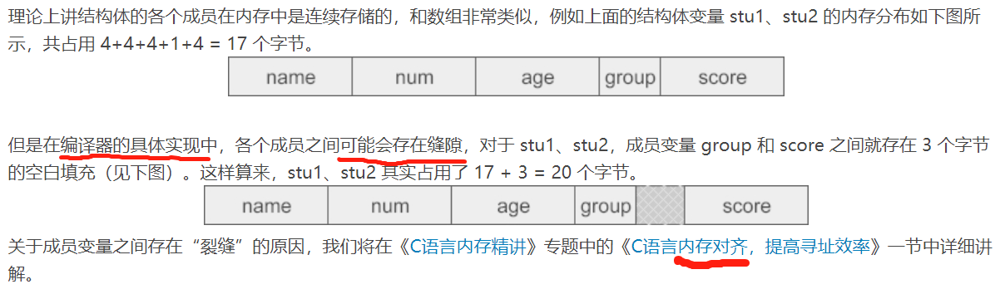

【本文结构】
- 1、结构体详解，struct用法详解
- 2、结构体数组
- 3、结构体指针（指向结构体的指针）
- 4、枚举类型
- 结构体（Struct）： 在C语言中，可以使用结构体（Struct）来存放一组不同类型的数据。
- 它是一种数据类型，只不过这种数据类型是程序员自定义的，而且比较复杂，是由 int、char、float 等基本类型组成的。
- 像 int、float、char 等是由C语言本身提供的数据类型，不能再进行分拆，我们称之为基本数据类型；
- 而结构体可以包含多个基本类型的数据，也可以包含其他的结构体，我们将它称为复杂数据类型或构造数据类型。
- 结构体是一种集合，它里面包含了多个变量或数组，它们的类型可以相同，也可以不同，每个这样的变量或数组都称为结构体的成员（Member）。
- 前面介绍过的数组（Array）也是一种数据的集合，但是它是一组具有相同类型的数据的集合。
- 结构体的定义形式为：
struct 结构体名{ //注意，结构体名和 { 之间没有 =
结构体所包含的变量或数组
};
- 需要注意的是，结构体是一种自定义的数据类型，是创建变量的模板，不占用内存空间；结构体变量才包含了实实在在的数据，需要内存空间来存储。
- 下面是一个具体的例子（定义一个结构体类型，名为 stu，并定义两个 stu 类型的变量 stu1 和 stu2）
struct stu{
char *name; //姓名
int num; //学号
int age; //年龄
char group; //所在学习小组
float score; //成绩
}; //注意大括号后面的 ; 不能少，这样才是一条完整的语句。
struct stu stu1, stu2;
- 也可以在定义结构体的同时定义结构体变量 （将变量放在结构体定义的最后的 } 之后 ; 之前即可。）
struct stu{
char *name;
int num;
int age;
char group;
float score;
} stu1, stu2;
- 如果只需要 stu1、stu2两个变量，后面不需要再使用结构体名定义其它变量，则在定义时也可以不给出结构体名。 （这样做书写简单，但是因为没有结构体名，后面就没法用该结构体定义新的变量。）
struct { //这里没有给出结构体名
char *name;
int num;
int age;
char group;
float score;
} stu1, stu2;

- 结构体成员的获取和赋值
- 结构体使用点号 . 获取单个成员。获取结构体成员的一般格式为：
结构体变量名.成员名
- 通过这种方式可以获取成员的值，也可以给成员赋值。
- 结构体和数组类似，也是一组数据的集合，整体使用没有太大的意义（数组使用下标 [ ] 获取单个元素）。
//给结构体成员赋值
stu1.name = "Tom";
stu1.num = 12;
stu1.age = 18;
stu1.group = 'A';
stu1.score = 136.5;
//读取结构体成员的值
printf("%s的学号是%d，年龄是%d，在%c组，今年的成绩是%.1f！\n", stu1.name, stu1.num, stu1.age, stu1.group, stu1.score);
- 除了可以对成员进行逐一赋值，也可以在定义时整体赋值：
- 不过整体赋值仅限于定义结构体变量的时候，在使用过程中只能对成员逐一赋值，这和数组的赋值非常类似。
struct stu{
char *name;
int num;
int age;
char group;
float score;
} stu1, stu2 = {"Tom", 12, 18, 'A', 136.5};
- 结构体数组： 是指数组中的每个元素都是一个结构体。
- 定义结构体数组：（定义结构体变量的方式类似）
struct stu{
char *name;
int num;
int age;
char group;
float score;
} class[5];
- 结构体数组在定义的同时也可以初始化:
struct stu{
char *name;
int num;
int age;
char group;
float score;
} class[5] = { //当对数组中全部元素赋值时，也可不给出数组长度 5
{"Li ping", 5, 18, 'C', 145.0},
{"Zhang ping", 4, 19, 'A', 130.5},
{"He fang", 1, 18, 'A', 148.5},
{"Cheng ling", 2, 17, 'F', 139.0},
{"Wang ming", 3, 17, 'B', 144.5}
};
//结构体数组的使用也很简单，例如，获取 Wang ming 的成绩：
class[4].score;
//修改 Li ping 的学习小组：
class[0].group = 'B';
- 结构体指针：当一个指针变量指向一个结构体时，就称它为指针变量。
- C语言结构体指针的定义形式为：
- 注意，结构体变量名和数组名不同，数组名在表达式中会被转换为数组指针，而结构体变量名不会，无论在任何表达式中它表示的都是整个集合本身，要想取得结构体变量的地址，必须在前面加 & 。
struct 结构体名 *指针变量名 //注意，这里是结构体名，不是结构体变量名
//实例 1
struct stu{
char *name;
int num;
int age;
char group;
float score;
} stu1 = {"Tom", 12, 18, 'A', 136.5};
struct stu *pstu = &stu1;
//实例 2
//也可以在定义结构体的同时（定义一个结构体变量来）定义结构体指针
struct stu{
char *name;
int num;
int age;
char group;
float score;
} stu1 = {"Tom", 12, 18, 'A', 136.5}, *pstu = &stu1; //这样做就省略了struct stu
- 注意，结构体和结构体变量是两个不同的概念：
- 结构体是一种数据类型，是一种创建变量的模板，编译器不会为它分配内存空间，就像 int、float、char 这些关键字本身不占用内存一样；
- 结构体变量才包含实实在在的数据，才需要内存来存储。
- 下面的写法是错误的，不可能去取一个结构体名的地址，也不能将它赋值给其他变量：
struct stu *pstu = &stu; //错误，因为 stu 是一个结构体，不是一个结构体变量。
struct stu *pstu = stu; //错误，结构体名代表自定义的一个数据类型，是模板，不占用内存。而结构体变量名在表达式中不代表指针和地址，需要通过&才能提取地址。
- 通过结构体指针获取结构体变量的成员
- 有两种方式：
(*pointer).memberName //括号不能省，有星号 *，这里没有以 ; 结尾，因为不一定是语句。
pointer->memberName //pointer 前没有星号 *
- 上面的两种写法是等效的，我们通常采用后面的写法，这样更加直观。
- 第二种写法中，-> 是一个新的运算符，习惯称它为“箭头”，有了它，可以通过结构体指针直接取得结构体成员；这也是 -> 在C语言中的唯一用途。
//读取结构体成员的值
printf("%s的学号是%d，年龄是%d，在%c组，今年的成绩是%.1f！\n", (*pstu).name, (*pstu).num, (*pstu).age, (*pstu).group, (*pstu).score);
printf("%s的学号是%d，年龄是%d，在%c组，今年的成绩是%.1f！\n", pstu->name, pstu->num, pstu->age, pstu->group, pstu->score);
- 结构体指针作为函数参数
- 结构体变量名代表的是整个集合本身，作为函数参数时传递的整个集合，也就是所有成员，而不是像数组一样被编译器转换成一个指针。
- 如果结构体成员较多，尤其是成员为数组时，传送的时间和空间开销会很大，影响程序的运行效率。
- 所以最好的办法就是使用结构体指针，这时由实参传向形参的只是一个地址，非常快速。
/*计算全班学生的总成绩、平均成绩和140分以下的人数*/
#include <stdio.h>
struct stu {
char *name; //姓名
int num; //学号
int age; //年龄
char group; //所在小组
float score; //成绩
} stus[] = {
{"Zhou ping", 5, 18, 'C', 145.0},
{"Zhang ping", 4, 19, 'A', 130.5},
{"Liu fang", 1, 18, 'A', 148.5},
{"Cheng ling", 2, 17, 'F', 139.0},
{"Wang ming", 3, 17, 'B', 144.5}
};
void average(struct stu *pstus, int len);
int main()
{
int len = sizeof(stus) / sizeof(struct stu); //求 stus 的元素个数
average(stus, len);
return 0;
}
void average(struct stu *pstus, int len)
{
int i, num_under_140 = 0;
float average, sum = 0;
for (i = 0; i < len; i++)
{
sum += (pstus + i)->score;
if ((pstus+i)->score < 140)num_under_140++;
}
average = sum / len;
printf("sum=%.2f\naverage=%.2f\nnum_under_140=%d\n", sum, average, num_under_140);
}
运行结果：
sum=707.50
average=141.50
num_under_140=2
- 枚举（Enum）类型：
- 在实际编程中，有些数据的取值往往是有限的，只能是非常少量的整数，并且最好为每个值都取一个名字，以方便在后续代码中使用。
- 以给一周中的七天各取一个名字为例，#define命令虽然能解决问题，但也带来了不小的副作用，导致宏名过多，代码松散。C语言提供了一种枚举（Enum）类型，能够列出所有可能的取值，并给它们取一个名字。
- 枚举类型的定义形式为：
enum typeName{valueName1, valueName2, valueName3, ......}; //注意最后的 ; 不能少。
- enum是一个新的关键字，专门用来定义枚举类型，这也是它在C语言中的唯一用途；
- typeName是枚举类型的名字；
- valueName1, valueName2, valueName3, ......是每个值对应的名字的列表。
- 具体的例子：（列出一个星期有几天）
enum week{Mon, Tue, Wed, Thu, Fri, Sat, Sun}; //week是枚举类型的名字
- 可以看到，我们仅仅给出了名字，却没有给出名字对应的值，这是因为枚举值默认从 0 开始，往后逐个加 1（递增）；
- 也就是说，week 中的 Mon、Tues ...... Sun 对应的值分别为 0、1 ...... 6。
- 我们也可以给每个名字都指定一个值：
enum week{Mon=1, Tue=2, Wed=3, Thu=4, Fri=5, Sat=6, Sun=7};
- 更为简单的方法是只给第一个名字指定值：
enum week{Mon=1, Tue, Wed, Thu, Fri, Sat, Sun}; //这样枚举值就从 1 开始递增，跟上一种写法是等效的。
- 枚举变量
- 枚举是一种类型，通过它可以定义枚举变量。
enum week a, b, c;
- 也可以在定义枚举类型的同时定义变量。
enum week{Mon=1, Tue, Wed, Thu, Fri, Sat, Sun} a, b, c;
- 有了枚举变量，就可以把（枚举类型定义中的）列表中的值赋给它们。
- 列表中的Mon、Tues、Wed 等都是常量，不能对它们赋值，只能将它们的值赋给其他的变量。
enum week a=Mon, b=Wed, c=Sat;
//或者：
enum week{Mon=1, Tue, Wed, Thu, Fri, Sat, Sun} a=Mon, b=Wed, c=Sat;
- 示例：判断用户输入的是星期几
#include <stdio.h>
//判断用户输入的是星期几
int main()
{
enum week {Mon=1, Tue, Wed, Thu, Fri, Sat, Sun};
enum week day;
//int day; //用这种方式也可以
puts("请输入一个1-7的整数:");
scanf("%d", &day);
switch (day)
{
case Mon:puts("Monday"); break;
case Tue:puts("Tuesday"); break;
case Wed:puts("Wednesday"); break;
case Thu:puts("Thursday"); break;
case Fri:puts("Friday"); break;
case Sat:puts("Saturday"); break;
case Sun:puts("Sunday"); break;
default:puts("Error!");
} //注意，这里没有分号 ;
return 0;
}
运行结果：
4↙
Thursday
- 枚举列表中的 Mon、Tues、Wed 这些标识符的作用范围是全局的（严格来说是 main() 函数内部），不能再定义与它们名字相同的变量。
- Mon、Tues、Wed 等都是常量，不能对它们赋值，只能将它们的值赋给其他的变量。
- 枚举和宏其实非常类似：宏在预处理阶段将名字替换成对应的值，枚举在编译阶段将名字替换成对应的值。我们可以将枚举理解为编译阶段的宏。